기계설계산업기사 (2015-08-16 기출문제)
1과목: 기계가공법 및 안전관리
1. 전해연마에 이용되는 전해액으로 틀린 것은?
- 인산
- 황산
- 과염소산
- 초산
(정답률: 64%)

2. 정밀측정에서 아베의 원리에 대한 설명으로 옳은 것은?
- 내측 측정시는 최대값을 택한다.
- 눈금선의 간격은 일치 되어야 한다.
- 단도기의 지지는 양끝 단면이 평행하도록 한다.
- 표준자와 피측정물은 동일 축선상에 있어야 한다.
(정답률: 83%)
3. 일반적인 선반작업의 안전수칙으로 틀린 것은?
- 회전하는 공작물을 공구로 정지시킨다.
- 장갑, 반지 등은 착용하지 않도록 한다.
- 바이트는 가능한 짧고 단단하게 고정한다.
- 선반에서 드릴작업 시 구멍가공이 거의 끝날 때에는 이송을 천천히 한다.
(정답률: 88%)
4. 액체호닝에서 완성 가공면의 상태를 결정하는 일반적인 요인이 아닌 것은?
- 공기압력
- 가공 온도
- 분출각도
- 연마제의 혼합비
(정답률: 54%)
5. 선반가공에서 이동 방진구에 대한 설명 중 틀린 것은?
- 베드의 상면에 고정하여 사용한다.
- 왕복대의 새들에 고정시켜 사용한다.
- 두 개의 조(jaw)로 공작물을 지지한다.
- 바이트와 함께 이동하면서 공작물을 지지한다.
(정답률: 56%)
6. 그림에서 X는 18mm, 핀의 지름이 ø6mm이면 A값은 약 몇 mm인가?
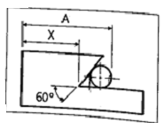
- 23.196
- 26.196
- 31.392
- 34.392
(정답률: 68%)
7. 스패너 작업의 안전수칙으로 거리가 먼 것은?
- 몸의 균형을 잡은 다음 작업을 한다.
- 스패너는 너트에 알맞은 것을 사용한다.
- 스패너의 자루에 파이프를 끼워 사용한다.
- 스패너를 해머 대용으로 사용하지 않는다.
(정답률: 89%)
8. 공작물을 절삭할 때 절삭온도의 측정 방법으로 틀린 것은?
- 공구 현미경에 의한 측정
- 칩의 색깔에 의한 측정
- 열량계에 의한 측정
- 열전대에 의한 측정
(정답률: 78%)
9. 측정 오차에 관한 설명으로 틀린 것은?
- 계통 오차는 측정값에 일정한 영향을 주는 원인에 의해 생기는 오차이다.
- 우연 오차는 측정자와 관계없이 발생하고, 반복적이고 정확한 측정으로 오차 보정이 가능하다.
- 개인 오차는 측정자의 부주의로 생기는 오차이며, 주의해서 측정하고 결과를 보정하면 줄일 수 있다.
- 계기 오차는 측정압력, 측정온도, 측정기 마모 등으로 생기는 오차이다.
(정답률: 74%)
10. 일반적으로 한계 게이지 방식의 특징에 대한 설명으로 틀린 것은?
- 대량 측정에 적당하다.
- 합격, 불합격의 판정이 용이하다.
- 조작이 복잡하므로 경험이 필요하다.
- 측정 치수에 따라 각각의 게이지가 필요하다.
(정답률: 78%)
11. 연삭작업에서 주의해야 할 사항으로 틀린 것은?
- 회전속도는 규정 이상으로 해서는 안 된다.
- 작업 중 숫돌의 진동이 있으면 즉시 작업을 멈춰야 한다.
- 숫돌커버를 벗겨서 작업을 한다.
- 작업 중에는 반드시 보안경을 착용하여야 한다.
(정답률: 89%)
12. 선반가공에서 지름 102mm인 환봉을 300rpm으로 가공할 때 절삭 저항력이 981N이었다. 이 때 선반의 절삭효율을 75%라 하면 절삭동력은 약 몇 kW인가?
- 1.4
- 2.1
- 3.6
- 5.4
(정답률: 45%)
13. 절삭공구의 수명 판정방법으로 거리가 먼 것은?
- 날의 마멸이 일정량에 달했을 때
- 완성된 공작물의 치수 변화가 일정량에 달했을 때
- 가공면 또는 절삭한 직후 면에 광택이 있는 무늬 또는 점들이 생길 때
- 절삭저항의 주분력, 배분력이나 이송방향 분력이 급격히 저하되었을 때
(정답률: 62%)
14. 압축공기를 이용하여, 가공액과 혼합된 연마재를 가공물 표면에 고압 · 고속으로 분사시켜 가공하는 방법은?
- 버핑
- 초음파 가공
- 액체 호닝
- 슈퍼 피니싱
(정답률: 74%)
15. 다음 연삭숫돌의 표시 방법 중에서 “5”는 무엇을 나타네는가?
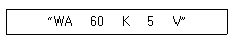
- 조직
- 입도
- 결합도
- 결합제
(정답률: 63%)
16. 절삭가공을 할 때, 절삭조건 중 가장 영향을 적게 미치는 것은?
- 가공물의 재질
- 절삭 순서
- 절삭 깊이
- 절삭 속도
(정답률: 83%)
17. 밀링작업의 절삭속도 산정에 대한 설명 중 틀린 것은?
- 공작물의 경도가 높으면 저속으로 절삭한다.
- 커터날이 빠르게 마모되면 절삭속도를 낮추어 절삭한다.
- 거친 절삭은 절삭속도를 빠르게 하고, 이송속도를 느리게 한다.
- 다듬질 절삭에서는 절삭속도를 빠르게, 이송을 느리게, 절삭 깊이를 적게 한다.
(정답률: 63%)
18. 절삭저항의 3분력에 해당되지 않는 것은?
- 주분력
- 배분력
- 이송분력
- 칩분력
(정답률: 90%)
19. 볼트머리나 너트가 닿는 자리면을 만들기 위하여 구멍 축에 직각 방향으로 주위를 평면으로 깎는 작업은?
- 카운터 싱킹
- 카운터 보링
- 스폿 페이싱
- 보링
(정답률: 66%)
20. 트위스트 드릴의 각부에서 드릴 홈의 골 부위(웨브 두께)를 측정하기에 가장 적합한 것은?
- 나사 마이크로미터
- 포인트 마이크로미터
- 그루브 마이크로미터
- 다이얼 게이지 마이크로미터
(정답률: 54%)
2과목: 기계제도
21. 그림과 같은 제3각 정투상도의 입체도로 가장 적합한 것은?
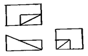
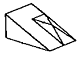
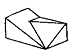
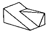
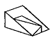
(정답률: 85%)
22. 그림에서 도시한 기어는?
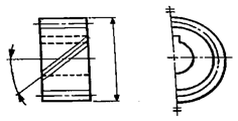
- 베벨기어
- 웜기어
- 헬리컬 기어
- 하이포이드 기어
(정답률: 74%)
23. 그림과 같이 기입된 KS 용접기호의 해석으로 옳은 것은?(오류 신고가 접수된 문제입니다. 반드시 정답과 해설을 확인하시기 바랍니다.)
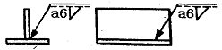
- 화살표 쪽 필릿 용접 목 두께가 6mm
- 화살표 반대쪽 필릿 용접 목 두께가 6mm
- 화살표 쪽 필릿 용접 목길이가 6mm
- 화살표 반대쪽 필릿 용접 목 길이가 6mm
(정답률: 69%)
24. 그림과 같이 3각법으로 투상된 도면에 가장 적합한 입체도 형상은?
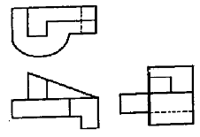
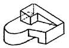
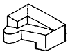
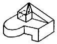
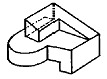
(정답률: 76%)
25. 3각법으로 투상한 그림과 같은 도면의 입체도는?
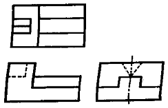
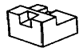
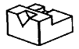
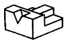
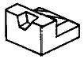
(정답률: 88%)
26. 그림과 같은 표면의 결 지시 기호에서 각 항목별 설명 중 옳지 않은 것은?
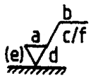
- a : 거칠기 값
- b : 가공 방법
- c : 가공 여유
- d : 표면의 줄무늬 방향
(정답률: 73%)
27. 다음 기하 공차 기호 중 돌출 공차역을 나타내는 기호는?
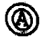
(정답률: 67%)
28. 그림과 같은 입체도에서 화살표 방향이 정면일 때 정투상법으로 나타낸 투상도 중 잘못된 도면은?
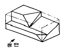
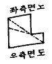
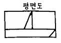
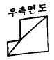
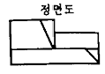
(정답률: 71%)
29. 도면에서 가는 실선으로 표시된 대각선 부분의 의미는?
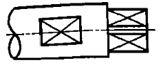
- 평면
- 곡면
- 홈부분
- 라운드 부분
(정답률: 89%)
30. 그림과 같은 기하공차 기호에 대한 설명으로 틀린 것은?
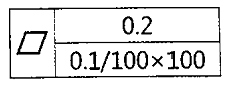
- 평면도 공차를 나타낸다.
- 전체부위에 대해 공차값 0.2mm를 만족해야 한다
- 지정넓이 100mm×100mm에 대해 공차값 0.1mm를 만족해야 한다.
- 이 기하공차 기호에서는 두 가지 공차조건 중 하나만 만족하면 된다.
(정답률: 85%)
31. 체결품의 부품 조립 간략 표시에 있어서 양쪽면에 카운터 싱크가 있고 현장에서 드릴 가공 및 끼워 맞춤을 나타내는 기호는?
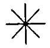
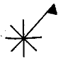
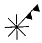
(정답률: 66%)
32. 기계구조용 탄소 강재의 KS 재료 기호로 옳은 것은?
- SM40C
- SS330
- AIDC1
- GC100
(정답률: 86%)
33. 구멍
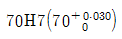
, 축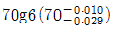
의 끼워 맞춤이 있다. 끼워 맞춤의 명칭과 최대틈새를 바르게 설명한 것은?- 중간 끼워 맞춤이며 최대 틈새는 0.01이다.
- 헐거운 끼워 맞춤이며 최대 틈새는 0.⑤9이다.
- 억지 끼워 맞춤이며 최대 틈새는 0.029이다.
- 헐거운 끼워 맞춤이며 최대 틈새는 0.039이다.
(정답률: 84%)
34. 보기와 같이 축 방향으로 인장력이나 압축력이 작요하는 두 축을 연결하거나 풀 필요가 있을 때 사용하는 기계 요소는 무엇인가?
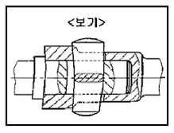
- 핀
- 키
- 코터
- 플랜지
(정답률: 72%)
35. Tr 40×7-6H로 표시된 나사의 설명 중 틀린 것은?
- Tr : 미터 사다리꼴 나사
- 40 : 나사의 호칭지름
- 7 : 나사산의 수
- 6H : 나사의 등급
(정답률: 74%)
36. 다음 용접 보조기호 중 전체 둘레 현장용접기호인 것은?
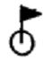
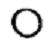
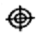
(정답률: 86%)
37. 피아노 선재의 KS 재질 기호는?
- HSWR
- STSY
- MSWR
- SWRS
(정답률: 55%)
38. 다음 중 복렬 깊은 홈 볼 베어링의 약식 도시 기호가 바르게 표시된 것은?
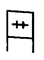
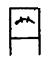
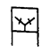
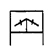
(정답률: 58%)
39. 2개의 입체가 서로 만날 경우 두 입체 표면에 만나는 선이 생기는데 이 선을 무엇이라고 하나?
- 분할선
- 입체선
- 직립선
- 상관선
(정답률: 75%)
40. 금속 재료의 표시 기호 중 탄소 공구강 강재를 나타낸 것은?
- SPP
- STC
- SBHG
- SWS
(정답률: 90%)
3과목: 기계설계 및 기계재료
41. 선팽창계수가 큰 순서로 올바르게 나열된 것은?
- 알루미늄 > 구리 > 철 > 크롬
- 철 > 크롬 > 구리 > 알루미늄
- 크롬 > 알루미늄 > 철 > 구리
- 구리 > 철 > 알루미늄 > 크롬
(정답률: 70%)
42. 탄소강에서 적열메짐을 방지하고, 주조성과 담금질 효과를 향상시키기 위하여 첨가하는 원소는?
- 황(S
- 인(P)
- 규소(Si)
- 망간(Mn)
(정답률: 66%)
43. 철-탄소(Fe-C)평형상태도에 대한 설명으로 틀린 것은?
- 강의 A2 변태점은 약 768℃이다.
- 탄소량의 0.8% 이하의 경우 아공석강이라고 한다.
- 탄소량이 0.8% 이상의 경우 시멘타이트 양이 적어진다.
- a-고용체와 시멘타이트의 혼합물을 펄라이트라고 한다.
(정답률: 56%)
44. 다음 순금속 중 열전도율이 가장 높은 것은? (단, 20℃ 에서의 열전도율이다.)
- Ag
- Au
- Mg
- Zn
(정답률: 58%)
45. 다음 중 불변강이 아닌 것은?
- 인바
- 엘린바
- 인코넷
- 슈퍼인바
(정답률: 69%)
46. 구리합금 중 6:4 황동에 약 0.8% 정도의 주석을 첨가하며 내해수성에 강하기 때문에 선박용 부품에 사용하는 특수 황동은?
- 네이벌 황동
- 강력 황동
- 납 황동
- 애드미럴티 황동
(정답률: 72%)
47. 한 변의 길이가 150mm~300mm로 분괴 압연된 각형 대강편은 무엇인가?
- bloom
- board
- billet
- slab
(정답률: 53%)
48. 인청동의 적당한 인 함량(%)은?
- 0.⑤ ~ 0.5
- 6.0 ~ 10.0
- 15.0 ~ 20.0
- 20.5 ~ 25.5
(정답률: 64%)
49. 풀림에 대한 설명으로 틀린 것은?
- 기계적 성질을 개선하기 위한 것이 구상화 풀림이다.
- 응력 제거 풀림은 재료 내부의 잔류응력을 제거하기 위한 것이다.
- 강을 연하게 하여 기계 가공성을 향상시키기 위한 것은 완전 풀림이다.
- 풀림온도는 과공석강인 경우에는 A3변태점보다 30~50℃로 높게 가열하여 방랭한다.
(정답률: 59%)
50. 강을 표준상태로 하고, 가공조직의 균일화, 결정립의 미세화 등을 목적으로 하는 열처리는?
- 풀림
- 불림
- 뜨임
- 담금질
(정답률: 59%)
51. 다음 중 두 축이 서로 교차하면서 회전력을 전달하는 기어는?
- 스퍼기어(spur gear)
- 헬리컬 기어(helical gear)
- 래크와 피니언(rack and pinion)
- 스파이럴 베벨기어(spiral bevel gear)
(정답률: 55%)
52. 지름 5cm의 축이 300rpm으로 회전할 때, 최대로 전달할 수 있는 동력은 약 몇 kW인가? (단, 축의 허용비틀림응력은 39.2MPa이다.)
- 8.59
- 16.84
- 30.23
- 181.38
(정답률: 36%)
53. 유니파이 보통나사 “1/4-20UNC”의 바깥지름은?
- 0.25mm
- 6.35mm
- 12.7mm
- 20mm
(정답률: 44%)
54. 원형봉에 비틀림 모멘트를 가하면 비틀림 변형이 생기는 원리를 이용한 스프링은?
- 겹판 스프링
- 토션 바
- 벌류트 스프링
- 랫칫 휠
(정답률: 74%)
55. 판의 두께 15mm, 리벳의 지름 20mm, 피치 60mm인 1줄 겹치기 리벳 이음을 하고자 할 때, 강판의 인장응력과 리벳이음 판의 효율은 각각 얼마인가? (단, 12.26kN의 인장하중이 작용한다.)
- 20.43MPa, 66%
- 20.43MPa, 76%
- 32.96MPa, 66%
- 32.98MPa, 76%
(정답률: 29%)
56. 일반용 V 고무 벨트(표준 V-벨트)의 각도는?
- 30°
- 40°
- 60°
- 90°
(정답률: 63%)
57. 지름 60mm의 강 축에 350rpm으로 50kW를 전달하려고 할 때, 허용전단응력을 고려하여 적용 가능한 묻힘 키(sunk key)의 최소 길이 (ℓ)는 약 몇 mm인가? (단, 키의 허용전단응력 τ=40N/mm2, 키의 규격(폭×높이)=12mm×10mm이다.)
- 80
- 85
- 90
- 95
(정답률: 26%)
58. 다음 중 자동 하중 브레이크의 종류로 틀린 것은?
- 웜 브레이크
- 밴드 브레이크
- 나사 브레이크
- 캠 브레이크
(정답률: 47%)
59. 재료의 기준강도(인장강도)가 400N/mm2이고 허용응력이 100N/mm2일 때, 안전율은?
- 0.25
- 1.0
- 4.0
- 16.0
(정답률: 71%)
60. 반경방향 하중 6.5kN, 축방향 하중 3.5kN을 받고, 회전수 600rpm으로 지지하는 볼 베어링이 있다. 이 베어링에 30000시간의 수명을 주기 위한 기본 동정격하중으로 가장 적합한 것은? (단, 반경방향 동하중계수(X)는 0.35, 축방향 동하중계수(Y)는 1.8로 한다.)
- 43.3kN
- 54.6kN
- 65.7kN
- 88.0kN
(정답률: 20%)
4과목: 컴퓨터응용설계
61. 좌표계의 원점이 중심이고 경도 u, 위도 v로 표시되는 구(sphere)의 매개변수식 (
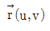
)으로 옳은 것은? (단, 구의 반경은 R로 가정하고,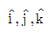
는 각각 x, y, z축 방향으로 단위벡터이며, 0≤u≤2π, -π/2≤v≤π/2이다.)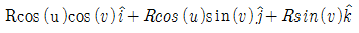
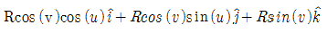
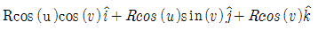
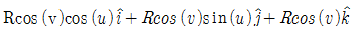
(정답률: 46%)
62. 다음 중 솔리드 모델링의 특징에 속하지 않는 것은?
- 은선 제거가 가능하다.
- 물리적 성질 등의 계산이 가능하다.
- 간섭체크가 불가능하다.
- 와이어프레임 모델링에 비해서는 메모리 용량이 많이 요구된다.
(정답률: 75%)
63. 솔리드 모델링에 있어서 사각블럭, 정육면체, 구, 원통, 피라밋 등과 같은 기본 입체를 사용하여 이들 형상을 불연산에 따라 일정한 순서로 조합하는 방식은?
- CSG 방식
- B-rep 방식
- NURBS 방식
- Assembly 방식
(정답률: 67%)
64. 블렌딩 함수로 bernstein 다항식을 사용한 곡선 방정식은?
- 퍼거슨(Ferguson) 곡선
- 베지어(Bezier) 곡선
- B-스플라인(spline) 곡선
- NURBS 곡선
(정답률: 54%)
65. CAD 시스템의 입력장치 중 좌표 정보를 찾아내는데 사용하는 로케이터(locator) 장치에 속하지 않는 것은?
- 조이스틱(joystick)
- 마우스(mouse)
- 라이트 펜(light pen)
- 트랙볼(track ball)
(정답률: 60%)
66. 디지털 목업(digital mock-up)에 관한 설명으로 거리가 먼 것은?
- 실물 mock-up의 사용빈도를 줄일 수 있는 대안이다.
- 간섭검사, 기구학적 검사 그리고 조립체 속을 걸어 다니는듯한 효과 등을 낼 수 있다.
- 적어도 surface나 solid model로 제품이 모델링되어야 한다.
- 조립체 모델링에는 아직 적용하지 않는다.
(정답률: 74%)
67. 면과 면이 만나서 이루어지는 모서지(edge)만으로 모델을 표현하는 방법으로 점, 직선 그리고 곡선으로 구성되는 모델링은?
- 와이어 프레임 모델링
- 솔리드 모델링
- 윈도우 모델링
- 서피스 모델링
(정답률: 71%)
68. 평면에서 x축과 이루는 각도가 150°이며 원점으로부터 거리가 1인 직선의 방정식은?
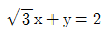
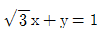
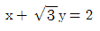
(정답률: 30%)
69. CAD 시스템에서 점을 정의하기 위해 사용되는 좌표계가 아닌 것은?
- 직교 좌표계
- 원통 좌표계
- 구면 좌표계
- 벡터 좌표계
(정답률: 68%)
70. Bezier 곡선의 특징에 관한 설명으로 옳지 않은 것은?
- 곡선은 첫 번째 조정점(control point)과 마지막 조정점을 통과한다.
- 곡선을 조정점(control point)을 연결하는 다각형의 외측에 존재한다.
- 1개의 조정점(control point) 변화만으로도 곡선 전체의 형상에 영향을 미친다.
- n개의 조정점(control point)에 의해 정의되는 곡선은 (n-1)차 곡선이다.
(정답률: 66%)
71. 솔리드 모델링(Solid Modeling)에서 면의 일부 혹은 전부를 원하는 방향으로 당겨서 물체를 늘어나도록 하는 모델링 기능은?
- 트위킹(Tweaking)
- 리프팅(Lifting)
- 스위핑(Sweeping)
- 스키닝(Skinning)
(정답률: 68%)
72. 특징 형상 모델링(Feature-based Modeling)의 특징으로 거리가 먼 것은?
- 기본적인 형상 구성 요소와 형상 단위에 관한 정보를 함께 포함하고 있다.
- 전형적인 특징 형상으로 모떼기(chamfer), 구멍(hole), 슬롯(slot) 등이 있다.
- 특징 형상 모델링 기법을 응용하여 모델로부터 공정 계획을 자동으로 생성시킬 수 있다.
- 주로 트위킹(tweaking) 기능을 이용하여 모델링을 수행한다.
(정답률: 61%)
73. B-Spline 곡선이 Bezier 곡선에 비해서 갖는 특징을 설명한 것으로 옳은 것은?
- 곡선을 국소적으로 변형할 수 있다.
- 한 조정점을 이동하면 모든 곡선의 형상에 영향을 준다.
- 자유곡선을 표현할 수 있다.
- 곡선은 반드시 첫 번째 조정점과 마지막 조정점을 통과한다.
(정답률: 46%)
74. CAD 용어에 관한 설명으로 틀린 것은?
- 표시하고자하는 화면상의 영역을 벗어나는 선들을 잘라버리는 것을 트리밍(trimming)이라고 한다.
- 물체를 완전히 관통하지 않는 홈을 형성하는 특징 형상을 포켓(pocket)이라고 한다.
- 명령의 실행 또는 마우스 클릭시마다 On 또는 Off가 번갈아 나타나는 세팅을 토글(toggle)이라고 한다.
- 모델을 명암으로 포함된 색상으로 처리한 솔리드로 표시하는 작업을 셰이딩(shading)이라 한다.
(정답률: 66%)
75. 좌표값(x, y)에서 x, y가 다음과 같은 식으로 주어질 때 그리는 궤적의 모양은? (단, r은 일정한 상수이다.)
- 원
- 타원
- 쌍곡선
- 포물선
(정답률: 56%)
76. 행렬 의 곱 AB는?
(정답률: 69%)
77. 설계해석 프로그램의 결과에 따라 응력, 온도 등의 분포도나 변형도를 작성하거나, CAD 시스템으로 만들어진 형상 모델을 바탕으로 NC공작기계의 가공 data를 생성하는 소프트웨어 프로그램이나 절차를 뜻하는 것은?
- Pre-processor
- Post-processor
- Multi-processor
- Co-processor
(정답률: 65%)
78. IGES 파일의 구조에 해당하지 않는 것은?
- Start Section
- Local Section
- Directory Entry Section
- Parameter Data Section
(정답률: 70%)
79. 중앙처리장치(CPU)구성요소에서 컴퓨터 내부 장치간의 상호신호교환과 입 ·출력 장치 간의 신호를 전달하고 명령어를 수행하는 장치는?
- 기억장치
- 입력장치
- 제어장치
- 출력장치
(정답률: 75%)
80. 정전기식 플로터에 대한 설명으로 옳지 않은 것은?
- 래스터식으로 운영되는 대표적인 플로터이다.
- 도형의 복잡 유무와 관계없이 작화속도가 거의 일정하다.
- 펜식 플로터와 비교하여 작화 속도가 빠르다.
- 주로 마이크로 필름에 출력하는 장치로 사용된다.
(정답률: 48%)